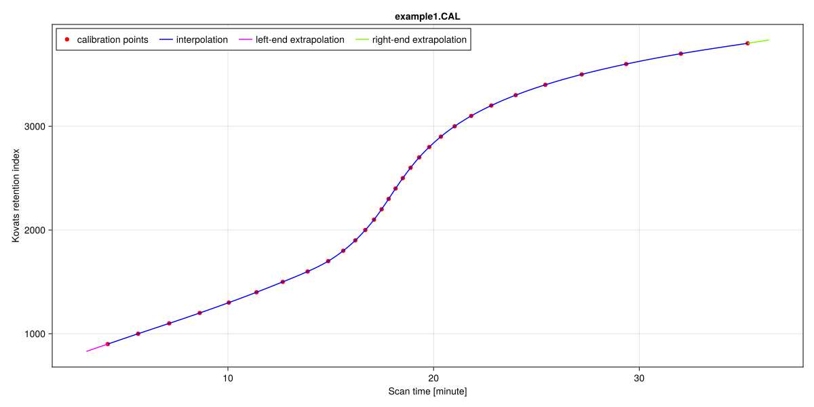
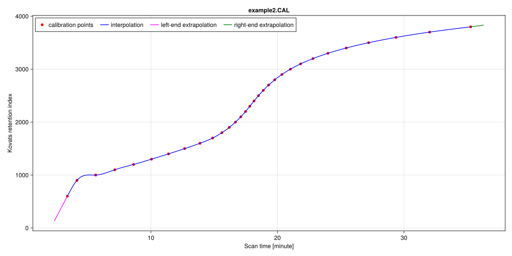

Retention Indices
Example: Calibration Points from a Delimited File
Let's assume we have a set of calibration points for calculating the Kovats retention index, stored in a delimited file. The first step is to read and format the data so it can be passed to the RiMapper constructor. In this example, we are using a .CAL file generated by the AMDIS software. The contents of the file example1.CAL are as follows:
4.154 900.0 98 1478 Nonane
5.635 1000.0 100 1215 Decane
7.145 1100.0 95 1606 Undecane
8.628 1200.0 100 1762 Dodecane
10.043 1300.0 100 1782 Tridecane
⋮
25.435 3400.0 92 920 Tetratriacontane
27.204 3500.0 90 819 Pentatriacontane
29.366 3600.0 91 723 Hexatriacontane
32.026 3700.0 88 602 Heptatriacontane
35.273 3800.0 85 493 OctatriacontaneAs we can see, the file contains whitespace-separated columns, but only the first two are relevant for our purposes. The first column lists the retention times (in minutes), while the second column provides the corresponding retention indices.
We will use a function from the DelimitedFiles.jl package, which comes with Julia, to read the file contents. Additionally, we need to assign the minute time unit to the time values. Since JuChrom.jl re-exports names from the Unitful.jl package, we will also load JuChrom.jl at this stage. To plot the inferred mapping function, we will further load the CairoMakie.jl package from the Makie visualization ecosystem. If you haven't installed it yet, you may need to do so.
using CairoMakie
using DelimitedFiles
using JuChrom
filename = "example1.CAL"
file = joinpath(JuChrom.calibration, filename)
data_cells = readdlm(file; header=false) # set header=true if the file contains a header30×5 Matrix{Any}:
4.154 900.0 98 1478 "Nonane"
5.635 1000.0 100 1215 "Decane"
7.145 1100.0 95 1606 "Undecane"
8.628 1200.0 100 1762 "Dodecane"
10.043 1300.0 100 1782 "Tridecane"
11.39 1400.0 91 1909 "Tetradecane"
12.667 1500.0 96 1956 "Pentadecane"
13.877 1600.0 100 1925 "Hexadecane"
14.876 1700.0 99 2029 "Heptadecane"
15.608 1800.0 95 2021 "Octadecane"
⋮
21.026 3000.0 86 1742 "Triacontane"
21.83 3100.0 93 1134 "Hentriacontane"
22.807 3200.0 92 1105 "Dotriacontane"
23.991 3300.0 94 1020 "Tritriacontane"
25.435 3400.0 92 920 "Tetratriacontane"
27.204 3500.0 90 819 "Pentatriacontane"
29.366 3600.0 91 723 "Hexatriacontane"
32.026 3700.0 88 602 "Heptatriacontane"
35.273 3800.0 85 493 "Octatriacontane"The output above displays the contents of the matrix referred to by the variable data_cells at this point. We will use slice notation to extract the values from the first and second columns. Additionally, we will convert these values to Float64 and append the minute time unit to the retention time values. The following two lines of code will achieve this:
rts = convert(Vector{Float64}, data_cells[:, 1]) * u"minute"30-element Vector{Quantity{Float64, 𝐓, Unitful.FreeUnits{(minute,), 𝐓, nothing}}}:
4.154 minute
5.635 minute
7.145 minute
8.628 minute
10.043 minute
11.39 minute
12.667 minute
13.877 minute
14.876 minute
15.608 minute
⋮
21.026 minute
21.83 minute
22.807 minute
23.991 minute
25.435 minute
27.204 minute
29.366 minute
32.026 minute
35.273 minuteris = convert(Vector{Float64}, data_cells[:, 2])30-element Vector{Float64}:
900.0
1000.0
1100.0
1200.0
1300.0
1400.0
1500.0
1600.0
1700.0
1800.0
⋮
3000.0
3100.0
3200.0
3300.0
3400.0
3500.0
3600.0
3700.0
3800.0We can now create a RiMapper object by calling its constructor with the required arguments, along with any optional ones if needed. The mandatory arguments include the name of the retention index (in our case, Kovats), the retention time, and the corresponding retention indices. In this example, we also store the name of the calibration file as metadata.
ld = RiMapper("Kovats", rts, ris, metadata=Dict(:filename => filename))RiMapper {index name: Kovats, calibration points: 30}
retention time range: 4.154 minute - 35.273 minute
retention index range: 900.0 - 3800.0
interpolation method: NaturalCubicBSpline(false)
extrapolation method: Linear()
metadata: 1 entrySince we did not explicitly specify an interpolation method or an extrapolation method, the constructor defaulted to NaturalCubicBSpline for interpolation and Linear for extrapolation.
We now have a RiMapper object that enables us to retrieve various details, including the retentionindexname and the retentiontimes and retentionindices used as calibration points. It also provides the names of the extrapolationmethod and the interpolationmethod, along with the metadata. Most importantly, this allows us to calculate the retentionindex for a given retention time of interest. We'll use this to plot the mapping function. Since we will be plotting additional mapping functions, we'll encapsulate the code for plotting the mapping function into a reusable function that can be called multiple times.
function plotmappingfunction(ld::RiMapper, outputfile::AbstractString)
# Create figure
f = Figure(; size=(1200, 600))
# Create axis in figure, including informative title and axis labels
title = get(metadata(ld), :filename, "")
ri_name = retentionindexname(ld)
timeunit = unit(eltype(retentiontimes(ld)))
ax = Axis(f[1,1], title=title, xlabel="Scan time [$timeunit]",
ylabel="$ri_name retention index")
# Plot calibration points
cal = scatter!(ax, retentiontimes(ld, ustripped=true), retentionindices(ld), color=:red)
# Plot interpolated values
xs = LinRange(minretentiontime(ld), maxretentiontime(ld), 1000)
itp = lines!(ax, ustrip(xs), retentionindex.(ld, xs), color=:blue)
# Calculate extrapolation range
Δt = (maxretentiontime(ld) - minretentiontime(ld)) / length(retentiontimes(ld))
# Plot left-end extrapolation
xs1 = LinRange(minretentiontime(ld) - Δt, minretentiontime(ld), 100)
etpₗ = lines!(ax, ustrip(xs1), retentionindex.(ld, xs1), color=:magenta)
# Plot right-end extrapolation
xs2 = LinRange(maxretentiontime(ld), maxretentiontime(ld) + Δt, 100)
etpᵣ = lines!(ax, ustrip(xs2), retentionindex.(ld, xs2), color=:green)
# Add an informative legend
axislegend(ax, [cal, itp, etpₗ, etpᵣ], ["calibration points", "interpolation",
"left-end extrapolation", "right-end extrapolation"], position = :lt,
orientation = :horizontal)
# Save figure in svg file format
save(outputfile, f)
end
plotmappingfunction(ld, "rt2ri.svg")CairoMakie.Screen{SVG}
This will produce the following Scalable Vector Graphics (SVG) file:

Example: Calibration Points from an Excel File
In this example, we assume that a set of calibration points for calculating the Kovats retention index, has been stored in an Excel file, possibly as a result of a manual entry. The relevant data can be found in the first sheet of the file example1.xlsx, named Table1.
We will use the XLSX.jl package to read the contents of the Excel file. As in the previous example, we need to assign the time values a unit of minutes. To accomplish this, we will import JuChrom.jl, which re-exports functionality from the Unitful.jl package.
using JuChrom
import XLSX
filename = "example1.xlsx"
file = joinpath(JuChrom.calibration, filename)
sheetname = "Table1"
excel_cells = "A1:B30"
data_cells = XLSX.readdata(file, sheetname, excel_cells)30×2 Matrix{Any}:
4.154 900
5.635 1000
7.145 1100
8.628 1200
10.043 1300
11.39 1400
12.667 1500
13.877 1600
14.876 1700
15.608 1800
⋮
21.026 3000
21.83 3100
22.807 3200
23.991 3300
25.435 3400
27.204 3500
29.366 3600
32.026 3700
35.273 3800The output above shows the contents of the matrix stored in the variable data_cells at this point. As in the previous example, we will use slice notation to extract the values from the first and second columns, convert them to Float64, and append the minute time unit to the retention time values.
timeunit = u"minute"
rts = convert(Vector{Float64}, data_cells[:, 1]) * timeunit
ris = convert(Vector{Float64}, data_cells[:, 2])
ld = RiMapper("Kovats", rts, ris, metadata=Dict(:filename => filename))RiMapper {index name: Kovats, calibration points: 30}
retention time range: 4.154 minute - 35.273 minute
retention index range: 900.0 - 3800.0
interpolation method: NaturalCubicBSpline(false)
extrapolation method: Linear()
metadata: 1 entryWe could reuse the plotting function from the first example to visualize the data. However, we will refrain from doing so here, as the values in the Excel file are identical to those in the delimited file. Instead, we will discuss an example where the imported calibration points result in an error when inferring a NaturalCubicBSpline interpolant.
Example: Error in Inferring NaturalCubicBSpline Interpolant
In the two previous examples, the computation of a natural cubic B-spline for calculating a continuously increasing retention index worked as expected. However, this is not always the case. If the computed B-spline contains critical points that would cause the retention index to decrease as retention time increases, the creation of the RiMapper would result in an error. Let's examine an example. The contents of the file example2.CAL are as follows:
3.394 600.0 100 742 Hexane
4.154 900.0 98 1478 Nonane
5.635 1000.0 100 1215 Decane
7.145 1100.0 95 1606 Undecane
8.628 1200.0 100 1762 Dodecane
⋮
25.435 3400.0 92 920 Tetratriacontane
27.204 3500.0 90 819 Pentatriacontane
29.366 3600.0 91 723 Hexatriacontane
32.026 3700.0 88 602 Heptatriacontane
35.273 3800.0 85 493 OctatriacontaneThe data is similar to that in example1.CAL, with the only difference being that example2.CAL includes the retention time and retention index of Hexane as an additional calibration point. We'll run the same commands as in the previous example, but this time, we'll specify a different input file and wrap the RiMapper call in a try/ catch block to handle any exceptions.
using CairoMakie
using DelimitedFiles
using JuChrom
filename = "example2.CAL"
file = joinpath(JuChrom.calibration, filename)
data_cells = readdlm(file; header=false)
rts = convert(Vector{Float64}, data_cells[:, 1]) * u"minute"
ris = convert(Vector{Float64}, data_cells[:, 2])
try
global ld = RiMapper("Kovats", rts, ris, metadata=Dict(:filename => filename))
catch e
println(e)
endArgumentError("the interpolator does not produce continuously increasing values")As shown in the output, the creation of a natural cubic B-spline that predicts continuously increasing retention indices with increasing retention time has failed. However, we can still force the B-spline interpolator to be returned, even if it contains critical points in one or more polynomials. This is achieved by explicitly specifying NaturalCubicBSpline as interpolatormetod and setting the force option in its keyword argument to true. This approach can be useful for identifying problematic or erroneous calibration points. Let's give it a try.
ld = RiMapper("Kovats", rts, ris, metadata=Dict(:filename => filename),
interpolationmethod=NaturalCubicBSpline(force=true))RiMapper {index name: Kovats, calibration points: 31}
retention time range: 3.394 minute - 35.273 minute
retention index range: 600.0 - 3800.0
interpolation method: NaturalCubicBSpline(true)
extrapolation method: Linear()
metadata: 1 entryLet's use the returned RiMapper object to plot the compromised mapping function using the code from the previous example.
# <- Insert plotmappingfunction code here
plotmappingfunction(ld, "rt2ri_2.svg")CairoMakie.Screen{SVG}
This will produce the following Scalable Vector Graphics (SVG) file:

As observed, the sharp increase in the retention index between 3.394 and 4.154 minutes prompted the creation of a B-spline featuring two critical points in its second polynomial: a local maximum at 5.128 minutes and a local minimum at 5.526 minutes. This outcome is not due to Hexane being incorrectly identified or associated with an incorrect retention time. Instead, the pronounced disparity in the retention time–retention index relationship in the first segment of the B-spline, compared to the following segments, causes the B-spline to oscillate. This oscillation suggests that the available set of calibration points at the start of the run is insufficient for reliable prediction of retention indices in this region using the chosen interpolation method. It is entirely possible that a denser sampling of calibration points at the beginning of the run could resolve this issue, particularly given the large RI interval between Hexane and Nonane compared to subsequent calibration points.
If the RiMapper is intended to interpolate values between, for example, minutes 10 and 30, the simplest solution might be to omit this calibration point. Alternatively, one could choose the PiecewiseLinear interpolation method, which avoids oscillations. However, it introduces discontinuities in its derivative, making it a less desirable interpolation method.